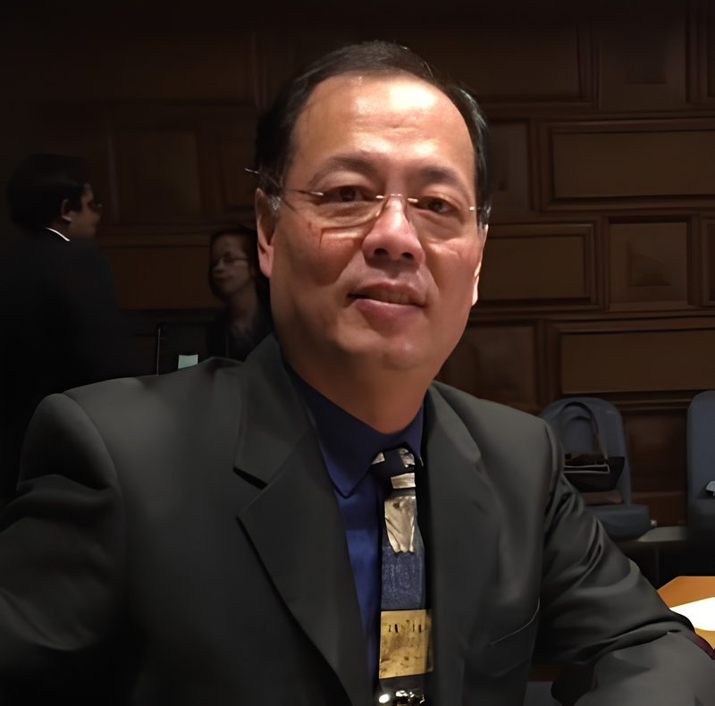
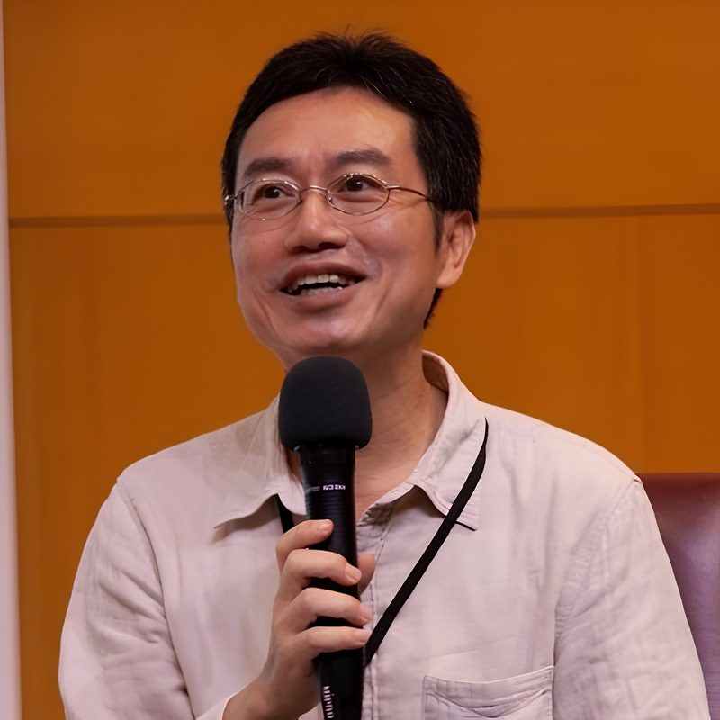

活動與影音
活動集錦：活動資訊及影音紀錄
BOOK EXHIBITION
主題書展
「我的人社超能力：永續未來術」主題書展
| 展期 | 2026.10.21（三）— 2027.03.07（日） |
|---|---|
| 地點 | 國立清華大學總圖書館一樓輕學區 |
TALKS
講座
LECTURE 01
「我的人社超能力：永續未來術」系列活動專題演講
「自然不需要我們拯救，需要的是我們的尊重」—從自然智慧到生態共生的永續新思維
日期時間 2026/11/18 (三) 18：30 - 20：30 地點 國立清華大學總圖書館1樓清沙龍 主持人 國立清華大學人文社會學院李卓穎院長 演講者

羅揚銘教授
現任國立清華大學永續學院教授，學門領域為生命科學及農學。
研究與教學專長涵蓋生態系統重建、生態永續農業、碳匯與碳信用、環境與人體健康、大地資源回收與精煉，以及食品安全體系等。

陳瑞樺教授
國立清華大學社會學研究所副教授兼所長，法國社會科學高等研究院（EHESS）社會學博士。
研究與教學專長涵蓋社區研究、社群關係、土地的文化政治、遷移的文化政治。長期深耕地方社會、文化運動與公民參與等議題。
講座內容與流程
對談主軸
- 羅揚銘教授：提出「自然如何永續」—從生態系統、土地、農業、自然智慧與環境問題出發，說明自然系統如何維持韌性，以及當前環境永續可能的實踐方向。
- 陳瑞樺教授：追問「永續如何進入社會」—將羅教授提出的環境議題放回土地、地方社會與真實生活情境中，進一步追問利益、成本、選擇、公平與文化延續等問題。
- 共同討論：「人與自然如何共同生活」
羅揚銘教授主題演講架構
- 1. 我們現在面對什麼環境問題？
- 土地與土壤、農業與糧食、水資源、生物多樣性、氣候與食品安全。
- 2. 自然本身如何維持系統？
- 從生態系統、自然智慧、生態復育及生態農業等面向，理解自然系統的韌性與互相依存關係。
- 3. 為什麼「知道怎麼做」仍然不等於「做得到」？
- 當環境解方進入真實社會，即涉及農民生計、產業利益、消費選擇、地方發展及政策制度，由此銜接陳瑞樺教授的提問。
核心對談議題
- 人類應該「管理自然」，還是「向自然學習」？
- 由自然智慧與生態系統出發，討論人類介入自然的界線。
- 土地究竟屬於誰？誰有權決定土地如何使用？
- 當生態保育、農業生產、地方生活與產業發展發生衝突時，什麼才算永續？
- 永續的成本由誰承擔？
- 環境改善可能伴隨生產、生活與產業成本，應由農民、企業、消費者、政府或社會共同承擔？
- 保存環境，是否也意味著保存一種生活方式？
- 如果土地仍在，但地方社群、文化、知識與生活方式消失，是否仍可稱為永續？
- 我們真正希望「永續」的是什麼？
- 從自然環境、土地、地方社會到人與自然的關係，共同思考未來應留下什麼。
活動流程
時間 活動內容 主要角色 18:30-18:40 開場與議題設定：說明「永續什麼？」及兩位講者的對談關係 李卓穎院長 18:40-19:20 主題演講：環境永續、生態系統、土地、農業與自然智慧 羅揚銘教授 19:20-19:35 人文回應：從土地、地方社會與社群角度提出第一輪問題 陳瑞樺教授 19:35-20:10 核心對談：由陳教授提問，羅教授主要回應，逐步由自然問題轉向社會問題 羅揚銘教授
陳瑞樺教授20:10-20:25 現場觀眾提問 兩位講者 20:25-20:30 結語 兩位講者 注意事項
- 參加對象
- 本校教職員工生、校外人士 ( 須年滿 18 歲 )( 校外人士若無本館借書證，請於入館時以身分證件換取「臨時閱覽證」入場 )
- 時數認證
- 全程參與之公務人員，將核發公務人員終身學習時數 ( 2 小時 )
GAME
線上遊戲及抽獎資訊
展場限定．超能力覺醒任務：「發光膠卷：打造你的永續製片所」
即日起於展場現場掃描QR Code參與任務，解鎖 6 道人生劇本關卡，就可獲得你的「專屬超能力角色卡」！將測驗結果分享至圖書館 FB 貼文留言區，還可參加限量永續好禮抽獎喔！